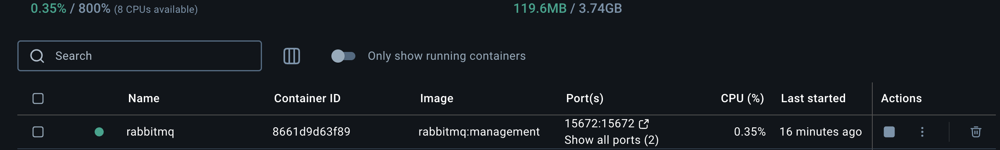

Event-Driven Architecture (EDA) in C++ with RabbitMQ (SimpleAmqpClient)¶
Event-Driven Architecture (EDA) is a software design pattern where components interact and coordinate through the detection and response to events. In this context, an event refers to any change in the system’s state, such as user inputs, database updates, or message exchanges.
EDA allows an asynchronous workflow and loose coupling between system components. This helps them to work independently and react dynamically to events.
One of the most widely used event brokers is RabbitMQ, which acts as an intermediary between event publishers and subscribers. It’s responsible for routing, transforming, and filtering messages.
RabbitMQ supports the Advanced Message Queuing Protocol (AMQP), which allows us to publish and consume messages in C++ through the SimpleAmqpClient library.
1. Installation¶
Install RabbitMQ¶
Easily install using docker
You should be able to see the rabbitmq container running in your docker desktop.

You can access RabbitMQ UI at http://localhost:15672 with ID: guest PWD: guest

This dashboard can be used to view current exchanges/queues and also emulate publisher/subscriber.
Install SimpleAmqpClient¶
SimpleAmqpClient is a C++ wrapper built on top of rabbitmq-c. It simplifies working with RabbitMQ by providing high level functions. With SimpleAmqpClient, You only need to worry about publishing messages and consuming them. The library takes care of all the low-level AMQP protocol operations behind the scenes.
Install with homebrew
2. Create Producer¶
Producer is referred to as an application or component that sends messages to a message broker. Publisher is a type of producer that specifically sends messages to an exchange in a message broker ⇒ publisher is a subset of producer. For the simplicity of the example, I will consider that my producer = publisher, ie. it will directly send the message to an exchange.
Types of Exchange¶
In RabbitMQ, there are 4 types of an exchange.
| Exchange Type | Description | Routing Mechanism | Example |
|---|---|---|---|
| Direct Exchange | Sends messages to queues with a specific routing key matching the message's routing key. | Exact key matching | If a message with routing key order.created is sent, only the queue bound with order.created will receive it. |
| Fanout Exchange | Broadcasts messages to all queues bound to the exchange, ignoring any routing key. | Broadcast to all bound queues | A message announcing a system-wide event like system.update will be sent to all queues bound to the exchange. |
| Topic Exchange | Routes messages based on pattern matching using wildcards (* and #) in the routing key. |
Pattern matching | A message with routing key user.created could be consumed by queues bound with patterns like user.* or user.#. |
| Headers Exchange | Routes messages based on matching headers instead of routing keys. | Header-based filtering | A message with headers { "format": "pdf", "type": "invoice" } will be sent to queues expecting these headers. |
I will use direct exchange for my example. Note that direct exchange is AmqpClient::Channel::EXCHANGE_TYPE_DIRECT.
Publisher Code¶
#include <SimpleAmqpClient/SimpleAmqpClient.h>
#include <iostream>
int main() {
auto channel = AmqpClient::Channel::Create("localhost");
channel->DeclareExchange("exchange_lyn", AmqpClient::Channel::EXCHANGE_TYPE_DIRECT);
std::string message = "Hello World~!";
channel->BasicPublish("exchange_lyn", "routing_key_lyn", AmqpClient::BasicMessage::Create(message));
std::cout << "Message sent: " << message << std::endl;
}
AmqpClient::Channel::Create()Creates a channel that connects to the RabbitMQ server running on localhost. The channel is used to communicate with RabbitMQ (publishing messages, creating queues/exchanges, etc.). * The connection defaults to AMQP port5672.DeclareExchange(exchange_name, exchange_type)Declares an exchange named with the given type.BasicPublish(exchange_name, routing_key, message)Publishes the message to the exchange using the routing key. Since our exchange type isdirect, it needs the routing key parameter and it will check for any queue with the exact routing key.
3. Create Consumer¶
Consumer is a component or application that receives and processes messages from a queue.
Consumer Code¶
#include <SimpleAmqpClient/SimpleAmqpClient.h>
#include <iostream>
int main() {
auto channel = AmqpClient::Channel::Create("localhost");
std::string queue_name = "queue_lyn";
channel->DeclareQueue(queue_name, false, false, false);
channel->BindQueue(queue_name, "exchange_lyn", "routing_key_lyn");
std::cout << "Waiting for messages..." << std::endl;
AmqpClient::Envelope::ptr_t envelope;
std::string consumer_tag = channel->BasicConsume(queue_name);
while (true) {
bool success = channel->BasicConsumeMessage(consumer_tag, envelope);
if (success) {
std::cout << "Received message: " << envelope->Message()->Body() << std::endl;
}
}
}
DeclareQueue(queue_name, passive, durable, exclusive, auto_delete)Declares a queue with the following parameters. Everything else except forqueue_namehas a default value. I setexclusiveto be false so the publisher can also access the queue.BindQueue(queue_name, exchange_name, routing_key)Binds the given queue to the exchange using the routing key. When a producer publishes a message to the exchange with that routing key, the message will be delivered to the queue.AmqpClient::Envelope::ptr_tDeclares a ptr to an envelope obj, which will be used to store the received messages. An envelope contains the message body, headers, and routing info.BasicConsume(queue_name)Starts consuming messages from the queue. It returns the consumer tag which we need to consume messages later. Note that this function must be called first in order to callBasicConsumeMessage()later.BasicConsumeMessage(consumer_tag, envelope)Waits for the next message from the queue. If a message is received, it is stored in the envelop obj and returntrue.envelope->Message()->Body()Message body.
4. Running and Testing¶
Build and Run¶
Build and run the executable. I used the makefile below to create 2 executables: producer and direct.
CXX = g++
CXXFLAGS = -std=c++17 -Wall -g
INCLUDES = -I/usr/local/include -I/opt/homebrew/include
LIBS = -L/usr/local/lib -L/opt/homebrew/lib -lSimpleAmqpClient -lrabbitmq -lboost_system
TARGETS = producer direct
SRCS = producer.cpp consumer.cpp
OBJS = $(SRCS:.cpp=.o)
all: $(TARGETS) clean_obj
producer: producer.cpp
$(CXX) $(CXXFLAGS) $(INCLUDES) producer.cpp -o producer $(LIBS)
direct: consumer.cpp
$(CXX) $(CXXFLAGS) $(INCLUDES) consumer.cpp -o direct $(LIBS)
clean_obj:
rm -f $(OBJS)
clean:
rm -f producer consumer
.PHONY: all clean clean_obj
When you make, you should see 2 executables. I ran each of them in a separate terminal.

First run the consumer, direct:
It should display:
Then run the the publisher, producer :
It should display:
As soon as you run the producer, you should be able to see on the consumer side saying that it received a message.

Navigating the Dashboard¶
Visit http://localhost:15672/ to view the dashboard.

Navigate to the exchanges tab, and you should be able to see the exchange we declared.

Click on the exchange name, and you should be able to see the queues and their routing keys that are bound with this exchange. You can see that my exchange_lyn is bound with queue_lyn with routing_key_lyn. This means that when a message is sent to exchange_lyn with the routing key routing_key_lyn, it will be delivered to queue_lyn.

Now if you navigate to the Queues and Streams tab, you should be able to see the queue you created as well.

You can click on the name again and view the consumers of the queue, and the bindings.

Testing Using the Dashboard¶
As I mentioned above, the dashboard can emulate the producer and the consumer, and create exchanger and queue using GUI. Using the dashboard, we will verify the characteristics of the direct exchange by creating another queue with the same routing key.
In the Queues and Streams tab, click on “Add a new queue”.

Then enter the name of the queue. I set mine as test_queue_lyn. Then click on “Add queue”.

You should be able to see your new queue on the list. Click on the name and scroll down to the “Bindings” section. Then enter the exchange name and routing key information. Note that they must have the same value with your other queue to achieve the goal of our testing.

Click on “Bind” and navigate to Exchanges tab. In the “Bindings” section, you should be able to see 2 of your queues bound to the exchange with the same routing key.

Now when the publisher sends a message to exchange_lyn with the routing key routing_key_lyn, both of my queues should receive the message. We can test by running the producer executable.
You should be able to see on the direct program that it received the message, and also the message rate graph spiking for queue_lyn.

Now, let’s check test_queue_lyn. You should be able to see the spike and the legend showing that there is 1 message ready.

Scroll down to the “Get messages” section and click on “Get Message(s)”. You should be able to see the payload with the message that producer sent. Success! (^0^)